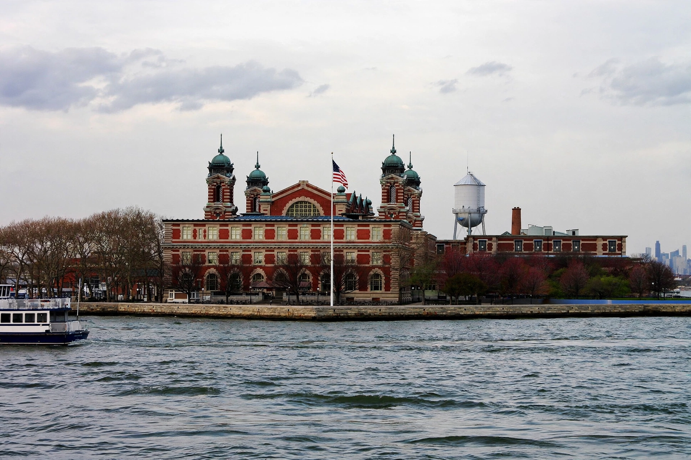

| Ellis Island | |
|---|---|
| Location | Upper New York Bay, United States |
| Area | 27.5 acres (11.1 ha) |
| Immigration station | 1892–1954 |
| Immigrants processed | Approx. 12 million |
| Part of | Statue of Liberty National Monument |

Ellis Island is a federally owned island in New York Harbor, situated within the U.S. states of New Jersey and New York. From 1892 to 1954, nearly 12 million immigrants arriving at the Port of New York and New Jersey were processed there under federal law.
The island was greatly expanded by land reclamation between 1892 and 1934, growing from 3.3 acres to 27.5 acres. The first federal immigration station opened on 1 January 1892; the first immigrant processed was Annie Moore, a 15-year-old from Ireland. After the original wooden station burned down in 1897, the present Beaux-Arts main building opened in 1900.
At its peak, in 1907, the station processed over 11,000 immigrants in a single day. Most arrivals spent only a few hours undergoing medical and legal inspections in the Great Hall, though some were detained or deported.
The station closed in November 1954. The island was added to the Statue of Liberty National Monument in 1965, and following an extensive restoration the main building reopened in 1990 as the Ellis Island National Museum of Immigration, operated by the National Park Service and accessible by ferry from Battery Park and Liberty State Park.
See also: Statue of Liberty · Immigration to the United States · Castle Clinton